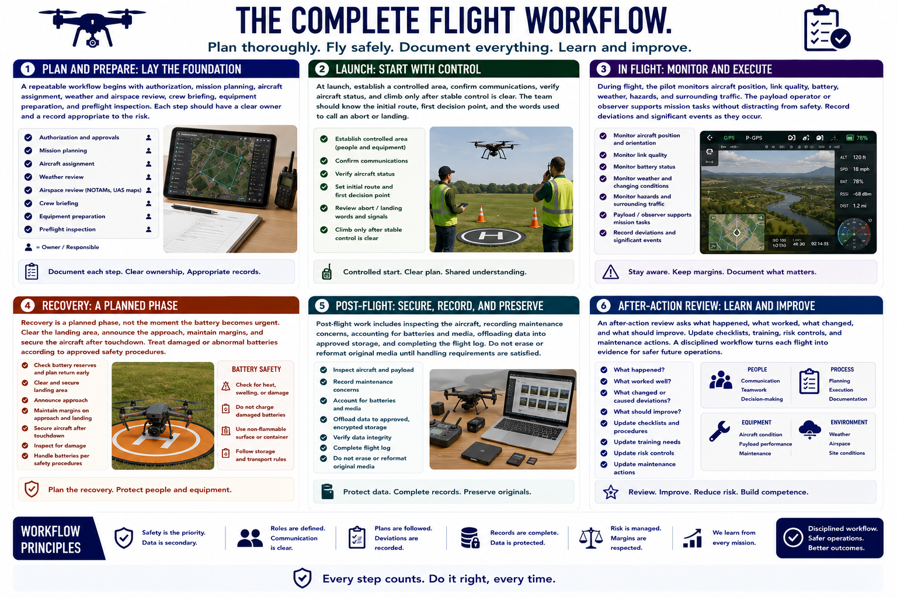

Operational Workflows
Connecting to LMS... Progress: in progress

Narration
A repeatable workflow begins with authorization, mission planning, aircraft assignment, weather and airspace review, crew briefing, equipment preparation, and preflight inspection. Each step should have a clear owner and a record appropriate to the risk.
At launch, establish a controlled area, confirm communications, verify aircraft status, and climb only after stable control is clear. The team should know the initial route, first decision point, and the words used to call an abort or landing.
During flight, the pilot monitors aircraft position, link quality, battery, weather, hazards, and surrounding traffic. The payload operator or observer supports mission tasks without distracting from safety. Record deviations and significant events as they occur.
Recovery is a planned phase, not the moment the battery becomes urgent. Clear the landing area, announce the approach, maintain margins, and secure the aircraft after touchdown. Treat damaged or abnormal batteries according to approved safety procedures.
Post-flight work includes inspecting the aircraft, recording maintenance concerns, accounting for batteries and media, offloading data into approved storage, and completing the flight log. Do not erase or reformat original media until handling requirements are satisfied.
An after-action review asks what happened, what worked, what changed, and what should improve. Update checklists, training, risk controls, and maintenance actions. A disciplined workflow turns each flight into evidence for safer future operations.